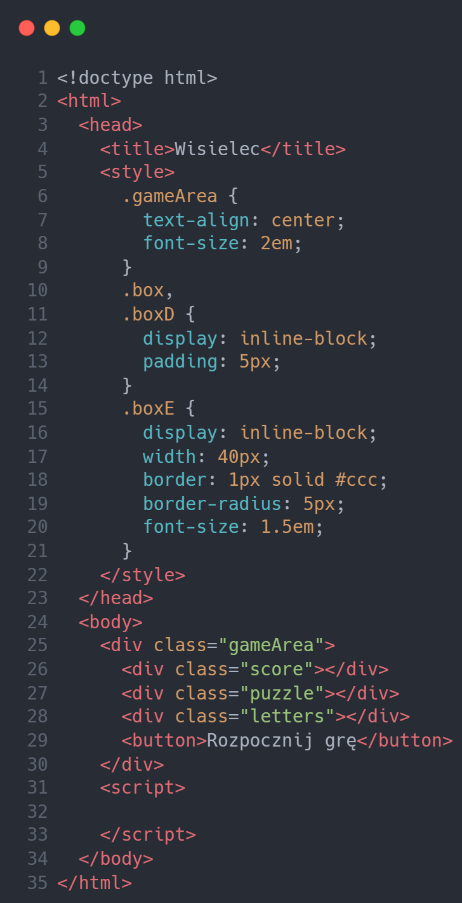

Korzystając z tablic i elementów strony, utwórz grę Wisielec. Jako punkt wyjścia możesz wykorzystać następujący szablon HTML:
Wykonaj wymienione tutaj kroki:
startGame().
startGame()
należy sprawdzić, czy w tablicy words pozostały jakiekolwiek słowa.
Jeżeli tak, przycisk powinien zostać ukryty przez przypisanie wartości
none właściwości .display. Usuń zawartość gry i ustaw 0
jako bieżącą punktację. W obiekcie gry w aktualnym słowie zdefiniuj
wartość, która będzie odpowiedzią na wywołanie shift() w
tablicy zawierającej słowa używane w grze.
split().
builder() używaną do przygotowania
planszy gry. Wywołaj tę funkcję z poziomu startGame() po
usunięciu i ponownym przypisaniu wszystkich wartości gry.
textContent i zwróć element.
builder() wywołanej po
startGame() zdefiniuj wartość innerHTML na
podstawie liter i rozmieść elementy strony.
builder() wygeneruj elementy strony, dodaj dane wyjściowe
-, zdefiniuj klasę i dołącz ją do głównego elementu strony gry.
builder().
fromCharCode() zwraca znak dla danej
wartości liczbowej.
checker().
checker(), która usunie klasę główną, dołączy inną klasę,
usunie komponent nasłuchiwania zdarzeń i uaktualni kolor tła. Ponadto
wywoła funkcję checkLetter(), przekazując jako argument
wartość w postaci klikniętej litery.
checkLetter() powinna przeprowadzić iterację przez
wszystkie litery rozwiązania. Dodaj warunek sprawdzający, czy litera
rozwiązania odpowiada literze wybranej przez gracza. Upewnij się, że
podana litera została skonwertowana na wielką, aby dokładnie porównać
litery. Uaktualnij dopasowane litery w układance, posługując się przy
tym tablicą układanki i indeksem litery z tablicy rozwiązania. Wartości
indeksu będą takie same w obu tablicach (układanki i rozwiązania), co
pozwala na łatwe dopasowanie układanki na stronie do zawartości tablic.
updatescore() w celu sprawdzenia, czy gra się zakończyła i
uaktualnienia wyniku. Właściwości textContent układanki przypisz literę,
która powinna zastąpić dotychczasowy znak minus.
updatescore() przypisz wynik odpowiadający
liczbie odgadniętych liter. Jeżeli całkowita liczba liter do odgadnięcia
wynosi zero lub mniej, gra jest zakończona. Wyświetl przycisk, aby gracz
miał możliwość rozpoczęcia następnej rundy gry.